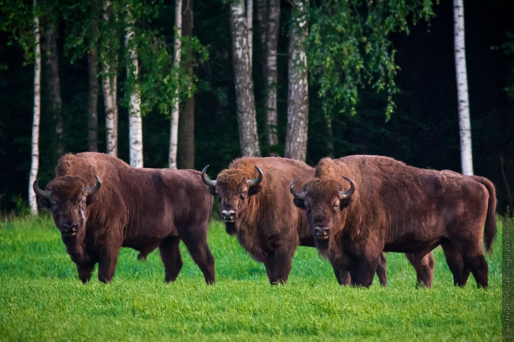

Belarus is a landlocked country in Eastern Europe, bordered by Russia, Ukraine, Poland, Lithuania and Latvia. It has a population of about 9.5 million people and covers an area of 207,600 square kilometers. The capital and largest city is Minsk, which is also the political, economic and cultural center of the country.
_10.jpg)
Belarus has a rich and diverse history, culture and nature. It is home to four UNESCO World Heritage Sites,
such as the Mir Castle Complex, the Białowieża Forest, the Struve Geodetic Arc and the Nesvizh Castle.
It also has many national parks, lakes, rivers and forests that offer scenic views and opportunities for outdoor activities.
Belarus is known for its folk traditions, music, literature, cuisine and sports, especially ice hockey.
Belarus is a presidential republic with a multi-party system. The current president is Alexander Lukashenko, who has been in power since 1994. Belarus is a member of the United Nations, the Commonwealth of Independent States, the Eurasian Economic Union and the Non-Aligned Movement. It maintains diplomatic relations with most countries of the world and participates in various international organizations and initiatives.
If you want to learn more about Belarus, you can visit the official website of the Republic of Belarus or the Belarus.by portal, which provide information on various aspects of the country, such as tourism, education, business, culture and more.
Places to visit in Belarus
Belarus has many attractions for tourists, both natural and man-made. Here are some of the most popular places to visit in Belarus:
- Brest Fortress: This is a 19th-century fortress that became a symbol of Soviet resistance during World War II, when it was besieged by Nazi forces for several weeks. The fortress complex includes a museum, a memorial park and a war cemetery.
- Belovezhskaya Pushcha National Park: This is one of the oldest and largest primeval forests in Europe, which is shared by Belarus
and Poland. It is home to many rare and endangered species of animals and plants, such as the European bison, the lynx, the wolf and the oak.
The park also has a nature museum, a zoo and a Santa Claus residence.
 - Polotsk: This is one of the oldest cities in Belarus, dating back to the 9th century. It was an important cultural and religious
center in medieval times, and the birthplace of the Belarusian literary tradition. The city has many historical and architectural monuments, such
as the Cathedral of Saint Sophia, the Convent of Saint Euphrosyne and the Monument of the Letter Ў.
- Grodno: This is another ancient city in Belarus, located on the border with Poland and Lithuania.
It was a major political and trade hub in the past, and the residence of several Polish and Lithuanian kings.
The city has a rich cultural heritage, with many churches, castles, palaces and museums. Some of the notable landmarks are the Old Castle,
the New Castle, the Kalozha Church and the Choral Synagogue.
- Braslav Lakes: This is a group of about 300 lakes in the north of Belarus, formed by glacial activity.
The lakes are surrounded by picturesque hills, forests and meadows, and offer a variety of recreational activities, such as fishing, boating,
hiking and camping.The lakes are also a habitat for many birds and animals, such as the black stork, the white-tailed eagle and the beaver.